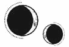

CAPÍTULO 4
Helena tardó apenas unos minutos en explorar hasta el último rincón de su habitación y el baño privado. Le habían proporcionado los objetos más básicos: jabón, toallas, un cepillo de dientes y un vaso metálico para el agua. Apretó el vaso para ver si se doblaba y lo logró. Si lo partía, tendría un borde afilado con el que podría abrirse las venas.
Tras varios minutos intentándolo, lo único que consiguió fue hacerse rozaduras en los pulgares y que le dolieran ambas muñecas.
Luego probó a arrancar el espejo, pero estaba tan bien anclado a la pared que ni siquiera consiguió meter los dedos por debajo. Tampoco se rompió cuando lo golpeó con el vaso.
Retrocedió, lanzó una mirada furibunda al vaso y torció el gesto al ver su reflejo.
Casi no reconocía a la persona que le devolvía la mirada con el ceño fruncido. Su piel cetrina no había visto la luz del sol en más de un año, su cabello largo y moreno estaba enredado hasta convertirse en una mata indomable. Tenía los rasgos hundidos y parecería una necrómata si no fuera por la rabia que ardía en sus ojos marrones.
Volvió al dormitorio y sintió decepción al darse cuenta de que no había cordeles en las cortinas con los que ahorcarse. Comprobó también por detrás, por si había pasado alguno por alto.
«Sigue viva, Helena», le suplicó una voz en su mente.
Se detuvo, trazando con los dedos el bordado de la cortina, tratando de sofocar aquella voz.
Luc… Oh, Luc. Cómo no iba a atormentarla negándose a aceptar una decisión tan pragmática. Si hubiera estado allí, le habría dicho que su plan era terrible. Siempre detestó este tipo de ideas, que la gente se sacrificara por él y su familia. Siempre se sentía responsable, convencido de que, si hubiera sido mejor, los habría salvado a todos.
Ahora podía oírlo insistiendo, terco, que no iba a morir. Que podía idear un plan mejor si tan solo dejaba de obsesionarse con este.
Helena negó con la cabeza.
—Lo siento, Luc. Esto es lo mejor que puedo hacer.
Se acercó a la puerta que desembocaba en el pasillo.
Las órdenes de permanecer fuera de la vista significaban que podía salir de la habitación. Al pensarlo, un temblor le recorrió el cuerpo y se le aceleró el corazón.
Agarró el pomo, que giró con facilidad. La pesada puerta se abrió sin resistencia, dejando al descubierto un largo pasillo que se adentraba en la oscuridad. Pero, en vez de emocionarse por aquella libertad, el corazón de Helena se detuvo.
Las lámparas de las paredes estaban apagadas. No se había percatado de lo siniestro que resultaba el pasillo: estrecho y retorcido, plagado de sombras acechantes, como dientes afilados, abriendo paso a unas fauces oscuras.
En la Central se había acostumbrado a tener luz constantemente.
Permaneció inmóvil. Era un sentimiento irracional, porque ahora estaba en una casa y había visto demasiadas cosas horribles en su vida como para tener miedo de sombras y pasillos oscuros, pero no logró mover las piernas. El pomo traqueteó entre sus dedos.
La penumbra era como un esófago palpitante; las sombras alargadas se mecían con el viento y amenazaban con tragarla. Si daba un paso más, caería otra vez en aquella oscuridad fría, terrible e interminable.
Nunca la encontrarían.
El terror se le clavó en el cuerpo como una lanza cuando las sombras volvieron a agitarse, arrastrándose hacia ella.
Se le contrajo el pecho y sintió una punzada de dolor en los pulmones. Sin pensarlo, Helena se metió de nuevo en la habitación y cerró la puerta, apoyando su cuerpo contra la superficie fría y sólida. Sentía los pulmones encogidos y el corazón en un puño, no podía respirar.
Sabía que el terror del tanque de suspensión la perseguiría siempre, pero no era consciente de que aquel temor se había enraizado en su interior, extendiéndose a través de los nervios y los órganos hasta paralizarla por completo.
Permaneció agachada y perdió la noción del tiempo, hasta que oyó que alguien llamaba a la puerta. Al sonido le siguió un tintineo de platos y pasos que se alejaban.
Abrió una rendija y encontró un bulto de ropa y una bandeja con comida. Los introdujo rápidamente e intentó no mirar de nuevo hacia la oscuridad acechante del pasillo.
Cuando cerró la puerta, dirigió una mirada de asco a la bandeja. La comida era una porquería, como si alguien hubiera reunido las sobras del día, las hubiera metido en una olla y las hubiera hervido. Prefería morirse de hambre.
Dejó la bandeja a un lado.
Al desplegar el bulto, encontró varios conjuntos de ropa interior, unas medias de lana y un vestido rojo, tan intenso como la sangre.
Había marcas de costura en los dobladillos, en el cuello y en el corpiño, parecía que habían arrancado los bordados y el encaje para hacer las prendas lo más sencillas posible.
Helena se arrepintió amargamente de haberse asustado al ver aquellas rosas.
Volvió a mirar la comida, recordando que debía tener cuidado con Aurelia.
En el fondo del bulto, había tres pares de zapatillas de baile: unos zapatos delicados con una suela fina y poco práctica, y con lacitos que se habían desprendido porque la tela que envolvía los dedos de los pies se estaba desgastando y había perdido el brillo satinado.
Excepto las medias, Helena guardó todo en el armario. Prefería llevar el vestido fino y áspero de la Central.
Por la mañana llegó otra bandeja, con un aspecto aún peor, si es que eso era posible. Helena tenía tanta hambre que eligió con cuidado unos cuantos trozos de comida que no estaban tan hervidos que hubieran perdido el color.
Quiso intentar salir de su habitación de nuevo, pero solo de pensarlo se le formó un nudo en el estómago.
En lugar de eso, se dedicó a hacer ejercicios de calistenia. Al menos, debía ser capaz de subir un tramo de escaleras sin que sus piernas amenazaran con ceder. También tenía los brazos débiles, pero descartó cualquier ejercicio que añadiera peso a las muñecas.
Miró con amargura los grilletes. Siempre se había sentido muy orgullosa de sus manos, de todo lo que podía hacer con ellas.
Cuanto más tiempo dedicaba a buscar excusas para no salir de la habitación, más culpable se sentía.
Cualquier miembro de la Resistencia ya habría memorizado la distribución de la casa, habría identificado posibles armas e incluso habría asesinado a los Ferron.
Lila no se habría permitido ser tan débil, sin importar a qué le tuviera miedo. Pero Helena nunca fue como ella, así que tendría que hacer las cosas a su manera. Era mejor esperar, dejar que Ferron viniera a ella.
Seguro que acudía pronto.
Helena solo podía imaginar cómo sería la transferencia.
Se acordó del cadáver de Crowther que tenía el liche dentro. Tal vez ella acabaría convertida en algo parecido, consciente de lo que le sucedía mientras Ferron la dominaba, poseyendo su mente y su cuerpo.
Al menos, si debía ver a Ferron a menudo, tendría la oportunidad de adivinar qué le sacaba de sus casillas, de encontrar una debilidad.
Se devanó los sesos tratando de recordar lo que sabía de su familia. Los Ferron habían participado en la industrialización alquímica del último siglo.
Crearon el primer gremio del hierro poco después de la fundación de Paladia. El hierro era uno de los ocho metales tradicionales que se asociaban a los ocho planetas: plomo para Saturno, estaño para Júpiter, hierro para Marte, cobre para Venus, mercurio para Mercurio, plata para la Luna, lumitio para Lumitia y oro para el Sol.
Por ser intratable y muy propenso a la corrosión, el hierro se consideraba un metal de bajo rango e innoble, sobre todo comparado con las sustancias incorruptibles, como la plata, el lumitio y el oro. Los Ferron habían sido una familia plebeya, herreros y forjadores que fabricaban arados y herramientas para la agricultura, en vez de trabajos de relumbre, como forjar armas de acero para la Llama Eterna, como hacían otros alquimistas férreos.
Conforme pasó el tiempo y se fueron descubrieron otros metales, el hierro siguió siendo un elemento difícil de tratar y básico, hasta que los Ferron desarrollaron un método para crear acero de forma eficiente mediante la alquimia. Con la precisión de su resonancia férrea, aseguraban una calidad a escala industrial que nadie podía igualar. Fue algo que cambió el mundo, a la par que a los Ferron. Pasaron de ser comerciantes a una burguesía trabajadora que albergaba mucha riqueza mientras la realidad a su alrededor se transformaba al mismo tiempo.
No importó que teológicamente el hierro estuviera clasificado como un metal celestialmente inferior; la era moderna se construyó con acero de la familia Ferron: las fábricas, las líneas de ferrocarril, los vehículos, incluso la propia Paladia, cuya arquitectura se elevaba hacia el cielo al ritmo del desarrollo industrial.
Puntaférreo, aunque ahora estuviera deteriorado, se había erigido como un monumento a esa influencia y riqueza, y al inmenso orgullo que la familia no dejaba de exhibir.
El primer recuerdo que Helena tenía de Kaine Ferron era del segundo curso, no como persona, sino como un nombre en una lista. Helena había sido la que sacó la nota más alta en el examen nacional de Alquimia ese año, desbancando a Ferron, que lo había conseguido el año anterior.
Luc se sintió muy orgulloso de ella. Siempre que tenía ocasión, repetía que el primer año no contaba, porque era la primera vez que Helena estudiaba alquimia y además lo había hecho en un idioma que no era el suyo.
Helena estuvo a punto de desmayarse de alivio. La beca de la Academia dependía de su rendimiento académico y aquel examen era una parte crucial de su evaluación. Su padre lo había dejado todo en Etras para traerla a Paladia, y habrían quedado arruinados si ella hubiera perdido la beca.
Las seis veces que Helena se presentó al examen nacional, el primer puesto osciló entre ambos como un péndulo: Helena Marino, Kaine Ferron.
Una rivalidad, aunque fuese indirecta, que jamás se reconoció en voz alta.
Él pertenecía al gremio y los alumnos del gremio no le dirigían la palabra a la «mascota de los Holdfast».
No comprendía cómo se había convertido en Sumo Inquisidor.
Había cursado una carrera académica, igual que ella. No era un alquimista especializado en combate como Lila, ni había hecho la doble vía como Luc. ¿Por qué un heredero del gremio se dedicaba a cazar y asesinar a todos los miembros que quedaban vivos de la Resistencia?
Cuanto más tiempo pensaba en ello, más le hervía la sangre al saber, aunque fuera de oídas, que existía alguien tan cruel.
De algún modo, era casi poético que fuese Helena la que había acabado cautiva en Puntaférreo.
Ya había vencido a Ferron en el pasado. Si tenía cuidado y era lista, lo haría de nuevo.
Cuando Ferron no apareció al segundo día, Helena se obligó a salir al pasillo. Ignoró el temblor que le sacudía los órganos y la opresión que le cerraba la garganta. Se pegó a la pared y recorrió con los dedos el revestimiento de madera, sin reparar en el polvo que se le incrustaba en los surcos de las yemas de los dedos, oscureciéndolos como si tuviera una infección.
«Puedes hacerlo», se repetía a sí misma mientras avanzaba bordeando la oscuridad, paso a paso, e intentaba esquivar las sombras más profundas. Quiso abrir la puerta que le quedaba más cerca, pero estaba cerrada con llave, así que siguió adelante un poco más.
El viento gimió entre los corredores, retorciéndose en un grito ahogado. Las ventanas traquetearon y la casa crujió como si tuviera huesos que se resquebrajaran.
Helena intentó respirar, pero no lo logró, era incapaz de hacerlo en ese pasillo donde las sombras se estiraban como si fuesen dedos hacia ella.
Cuando llegó a la tercera puerta, el miedo la detuvo por completo. Se dio la vuelta, mareada, el pasillo giraba a su alrededor y la oscuridad se cernía sobre ella.
Antes de alcanzar la puerta abierta, le fallaron las piernas. La visión se volvió borrosa y todo se oscureció a su alrededor.
Lila Bayard emergió de la oscuridad.
No era la Lila que Helena recordaba. No se trataba de la chica preciosa y esbelta que usaba armadura y tenía el cabello claro trenzado como una corona alrededor de la cabeza, como las estatuas de Lumitia.
Ahora Lila llevaba el pelo corto, casi como un chico. Parecía pequeña, a pesar de su imponente altura.
Fijó la mirada en Helena. El lado derecho de su rostro y cuello estaba amoratado y cubierto con una cicatriz, un tajo largo y cruel que le recorría desde la mejilla hasta la garganta. Sus ojos eran rojos.
—Lila, Lila, ¿qué sucede? ¿Qué te ha pasado?
Helena sintió que tenía cada vez más frío, que los dedos se le entumecían al estirar la mano hacia ella.
Lila abrió la boca para responder, pero entonces se desvaneció.
—Lila…
Cuando Helena abrió los ojos, estaba tirada en el suelo de su habitación con el corazón desbocado.
Intentó enfocar la mirada, pero un dolor intenso y punzante le taladraba la cabeza. Aquello que había visto se desvanecía como el agua entre la arena.
Las ventanas traquetearon con un golpe seco y la casa lanzó un gemido profundo, una vibración que recorrió el suelo como si estuviera cobrando vida. Helena se levantó apoyándose en las manos y se acercó a la ventana.
Las montañas estaban ya blancas, pero la nieve aún no había alcanzado la cuenca del río. Todavía debían de quedar unas semanas para el solsticio de invierno, con el que daba comienzo el año nuevo.
Catorce meses. Helena trató de recordar el último día del que tenía recuerdos durante la guerra. La batalla final tuvo que ocurrir a finales de verano, pero no se acordaba del mes o de las fases lunares exactas. El hospital permanecía ajeno al paso de las estaciones.
Mientras contemplaba el exterior, la puerta se abrió. Un escalofrío recorrió su espalda al darse la vuelta, pensando que sería Ferron.
Pero fue Aurelia la que entró envuelta en un remolino de tela azul, de nuevo cubierta de metal como un exoesqueleto delicadamente afiligranado. Si los Ferron andaban escasos de dinero, seguramente fuese porque la falda de Aurelia estaba hecha con decenas de metros de seda importada.
Tal vez Aurelia poseía una resonancia de hierro poco común, pero parecía una recién llegada respecto al dinero. No es que Helena tuviera alguna experiencia de eso, pero era algo que había aprendido sin quererlo al codearse con las familias nobles que servían a los Holdfast y a la Llama Eterna.
La vestimenta en las fincas solía ser menos formal. Luc le habló en muchas ocasiones de la casa de campo que su familia poseía en las montañas, de que la ropa que allí usaban era mucho más cómoda. Cada año, tras los desfiles del solsticio de verano que celebraban el cumpleaños del principado, siempre la invitaba a ir, para escapar del calor de la ciudad y de las epidemias fluviales que brotaban en las épocas de calor.
Ella siempre prefirió quedarse con su padre.
Años después, sí llegó a conocer la casa de campo, pero fue sola. Luc le había dicho la verdad: era un lugar precioso y la ropa cómoda, pero ella detestó cada minuto que pasó allí.
Aurelia miraba a Helena con repulsión.
—¿Por qué sigues llevando eso? ¿No te has lavado desde que llegaste?
No lo había hecho. Le parecía más seguro estar sucia.
—Sabía que eras extranjera, pero di por hecho que en el cuchitril en el que te encontraron los Holdfast existía una higiene básica.
Helena apretó los dientes.
—Ha llamado Stroud. Se te realizará el procedimiento esta noche. Lávate y arréglate ese pelo asqueroso que tienes antes de que vuelva, o le pediré a los necrómatas que te desnuden y lo hagan ellos. Tenemos algunos que huelen de lo lindo, y los llamaré si vuelvo a verte con esta pinta.
Se dio la vuelta y se alejó mientras la falda hacía frufrú a su paso.
Helena fue al baño, se arrancó su sencillo vestido y giró los grifos de la ducha rápidamente. Las tuberías escupieron varias veces antes de que el agua fluyera entre chirridos y siseos. Se frotó de la cabeza a los pies con un paño tan deprisa como le fue posible e intentó desenredarse el pelo con los dedos. No había peines por ninguna parte.
¿Se habría imaginado Ferron que lo usaría para rajarse la garganta?
No era mala idea, la verdad.
Cuanto estuvo lo bastante aseada, se puso la ropa interior limpia y áspera que le habían dejado, y se obligó a ponerse también el vestido, con cuidado de no mirar el color rojo.
Luego se sentó en la cama y siguió peleándose con los nudos del cabello. Le dolían las manos y las muñecas, pero no estaba dispuesta a poner a prueba la amenaza de Aurelia.
Los paladinos siempre habían considerado que Helena tenía el pelo muy alborotado. El cabello norteño solía ser fino e increíblemente liso, y los rizos solo se toleraban si se moldeaban con una barra de hierro candente que dejaba los mechones con la forma de un sacacorchos.
Cuando Helena se convirtió en sanadora, aprendió a llevarlo dispuesto en dos trenzas apretadas, enroscadas en la nuca, y, aunque ahora intentó trenzárselo, no podía hacer ese movimiento con las muñecas.
La puerta se abrió de par en par con un sonoro golpe, y Aurelia apareció bajo el marco. La recorrió de arriba abajo con sus ojos azul intenso, cargados de desdén. Helena se irguió, tensa, preparándose para el veredicto.
Aurelia soltó un bufido y frunció los labios.
—Vamos.
Helena la siguió en silencio, fijándose en las enrevesadas filigranas de metal que adornaban su ropa, en vez de prestar atención a las sombras que la envolvían.
A su escolta no pareció agradarle el silencio.
—Kaine dice que lo único valioso que tienes es el cerebro. —Miró a Helena por encima del hombro, como si esperara que ese comentario la afectara de algún modo—. Supongo que eso significa que puedo hacer lo que quiera con el resto de ti.
Mientras hablaba, transmutó los dedos en los que llevaba anillos de hierro.
A pesar del poder de su resonancia férrea, los movimientos de Aurelia no eran más que para alardear. Las armas que transmutaba le partirían las falanges si trataba de usarlas de verdad.
Helena dudaba que hubiera recibido algún tipo de entrenamiento formal. Por lo general, los gremios solo enviaban a sus hijos a la Academia; las hijas estaban destinadas al matrimonio. Tal vez les enseñaban algún truco alquímico, pero casi nunca se licenciaban.
Aun así, Helena fingió encogerse y apartó la mirada con cautela, intentando que sus pensamientos críticos no la delataran.
Aurelia hinchó el pecho, apretado bajo el corsé, y volvió a transformar sus dedos.
—Seguro que ahora te arrepientes de haberte unido a los Holdfast. Los gremios siempre estuvieron destinados a ganar. Intentasteis detenernos y mira adónde os ha llevado eso.
Volvió la cabeza y siguió caminando.
El vestíbulo estaba desierto. Aurelia subió los escalones con rapidez y apretó el paso por el pasillo del segundo piso, hasta detenerse en la primera puerta que había a mano izquierda. Tocó un panel de la puerta por encima del pomo, se oyó un chasquido y se abrió la cerradura.
—Es aquí. Entra y espera —le ordenó Aurelia, que miraba a todas partes. Fue entonces cuando Helena se percató demasiado tarde de que estaba cayendo en una trampa.
—Kaine vendrá enseguida. No salgas hasta que llegue —añadió Aurelia.
Y, sin decir nada más, echó a correr por el pasillo, dejando a Helena con la certeza creciente de que no debería estar en esa habitación.
Miró a su alrededor. ¿Debería volver? ¿O había alguna posibilidad de que esto la metiera en un lío tan serio como para que Ferron la matara?
Antes de que pudiera replanteárselo, el pasillo empezó a estirarse y dilatarse hasta que todas las superficies estuvieron fuera de su alcance. El pomo se encogía, mientras las sombras acechaban a su alrededor.
Se abalanzó hacia la puerta, consiguió hacer girar el pomo y se precipitó al interior de la habitación.
Era más pequeña que el pasillo.
Se apoyó contra la puerta y palpó la veta de la madera con la mano abierta, fijándose en todo cuanto la rodeaba en aquel espacio reducido.
Helena se sorprendió al ver que la habitación era igual que la suya: dos ventanas, una cama y un armario, pero en esta había un escritorio y una silla en vez de un sillón. Era todo muy austero.
Se acercó al escritorio junto a la ventana, había un montón ordenado de papeles.
Levantó el primer folio y lo sostuvo bajo la tenue luz, buscando si la correspondencia de Ferron se había traspasado a la página de abajo, pero el papel era grueso y sin marcas visibles. Pasó los dedos por la superficie del escritorio; tenía unas filigranas de plata horizontales, y unas hojas y unas parras talladas que estaban alineadas de una manera perfecta. No había duda: era obra de un alquimista de plata con talento.
El escritorio estaba muy bien conservado, al contrario que las telarañas que cubrían las filigranas de hierro de toda la casa.
Se dio la vuelta, en tensión, atrapada en una habitación en la que, casi con certeza, no debía estar. Dudó si volver o no a la suya, porque sabía que, si Aurelia la descubría, le haría algo desagradable.
¿Pero y si era Ferron quien la encontraba? ¿Colarse en una habitación cerrada le serviría para ganarse algún castigo letal? Helena dudaba que fuera una persona impulsiva y, si Stroud conocía tal cantidad de castigos mediante la vivemancia que no contaban técnicamente como tortura, Ferron, sin duda, también.
Se le secó la boca.
Todavía no sabía cómo sería la transferencia. A pesar de lo mucho que había oído hablar del tema, nadie le explicó qué le iba a hacer Ferron. Helena solo podía suponerlo, basándose en lo que había dicho Shiseo, aunque no tenía mucho sentido, porque Helena fue la que había curado al general Bayard cuando lo hirieron. Había puesto a prueba su conocimiento y habilidad para salvarlo, regenerando poco a poco el tejido cerebral afectado. Cuando sobrevivió, todos lo consideraron un milagro; decían que las manos de Helena estaban bendecidas por Sol.
Ese halago se desvaneció en cuanto el general Bayard despertó. Se había convertido en un niño: un general poderoso con las emociones de un crío de tres años. El que había sido un militar brillante no era capaz de abrir una puerta sin ayuda.
Helena había salvado su cuerpo, pero aprendió de su error que la mente era otro asunto. Durante años intentó, sin éxito, reparar el daño que había causado. En algún rincón oculto de su memoria, se le aparecía Elain Boyle, trayendo una cura, un procedimiento que más tarde aplicaría en Helena. Y ahora los inmarcesibles se enterarían de todo.
Oyó un chasquido en la puerta que la sacó de sus pensamientos. Se giró para ver entrar a Ferron. Tenía la mano en la garganta, pues se estaba desabrochando el cuello de la camisa.
Se detuvo al verla.
—Vaya —pronunció—, esto sí que es una sorpresa.